垃圾桶1 · 废弃
barrel.png · 地图标记 Z- 开箱
- 即时打开
- 抽取次数
- 1–2 次
- 掉落偏好
- 通用物品池
- 占格
- 1 格 · 不可穿过
即开即取。九成是白绿，但有 0.3% 的机会翻出金红——真正意义上的垃圾堆里淘黄金。
当前地图 1 个 · 查看位置
(22, 19)
画什么旧锈红铁皮油桶，俯视75度，顶部为横向椭圆金属圆盖，能看到南侧一小段弧形圆柱桶身、加强筋与底缘，顶盖小加油口，顶面亮、桶身暗，保持圆柱高度。
js/data.js 生成，
和游戏里的数据完全一致；改完物品表重跑 node gen-item-sheet.js 就会更新。assets/items/ 中的贴图。新增收集品图标总览。
尺寸 48 × 48 像素，PNG，透明背景。物品本体建议占满画布的 40×40，四周留 4px 空隙。
风格 像素画，关闭抗锯齿（游戏里用 image-rendering: pixelated 渲染）。深色背景下要看得清，尽量别用纯黑描边。
命名 文件名就是物品 id：antiq03.png、lux01.png。
位置 tide/assets/items/ 目录下。
游戏接入 搜刮、背包、安全箱和仓库共用这套图标。执行 node build.js 后，单文件游戏也会内嵌所有贴图。
单位：游戏货币 ¥。色条仅表示稀有度层次，不按金额线性缩放。医疗品与装备采用各自定价。逐件价格与经济说明
按九类组织，用于探索、交易与图鉴收集。
灾前社会的日常生活 · 三层结构：工业时代的通用器物打底，不同社会传统的交汇做层次，环礁湾自己的机构、商业与工艺史收口。不用于代表某一种现实文化。
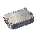
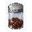
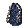
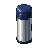
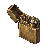
近现代技术文明 · 以接近现实1990年代的技术为基础，包括随身听、收音机、录像机和通信器件；超自然研究设备也可能采用普通电子技术。
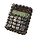
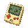
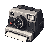
城市工业基础与工程活动 · 金属材料、工具、机械组件和工程仪器，体现城市工业史及人为干涉灾害的潜在技术背景。
医疗救治与生命研究 · 医疗耗材、病理切片和特殊检验用品，不预设它们一定来自异常研究。
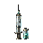
历史、文化与财富 · 古董、文物、艺术品、奢侈品和自然标本；价值可来自稀缺性、工艺、学术意义或历史背景。
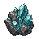
封锁、疏散与军事行动 · 军用通信器材、制式工具、识别设备、武器零件与军用补给，可关联首次潮汐的撤离行动及后续封锁。
目前没有符合此类别的既有物品，保留分类供后续扩充。
信息、调查与历史记录 · 官方档案、实验报告、地图、信函、秘密文件及其他记录载体；部分物品还可能具有探索信息价值。
隐藏于历史中的超自然传统 · 古代仪式用品、神秘学文物、祭器、符号器具和现代神秘学实践制作的物品；能否生效不决定分类。
目前没有符合此类别的既有物品，保留分类供后续扩充。
无法通过常规规律解释的事物 · 受潮汐或其他超自然现象影响的器物、特殊物质和不明产物；可以稳定存在、周期性变化或尚未被充分理解。
用于装填与治疗，不计入收集图鉴。
武器弹药 · 用于武器装填的物资。当前为通用弹药，后续可按枪械与口径扩充分型。
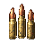
治疗与应急救护 · 恢复治疗、止痛、损伤处理、针剂和异常处理；仅恢复类已开放使用，与收集品中的医疗物资分开。
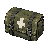
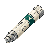
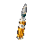
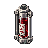
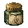
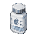
js/data.js，改完数值重跑
node gen-gear-sheet.js 就会更新。
尺寸 48 × 48 像素，PNG，透明背景。主体占满中央 40 × 40，四周留 4px。
显示尺寸 局内装备条为 24px，藏身处为 34px，细节要粗、要能一眼认出，别画密集细花纹和小字。
画法 物品图标可以用比场景更适合辨识的展示角度，不必受 75° 俯视约束。左上光源，硬边像素，无抗锯齿、无外发光、不画投影。
命名 rifle.png shotgun.png smg.png pistol.png；helmet1.png～helmet6.png；body1.png～body6.png；bag.png。
位置 tide/assets/gear/ 目录下。
1 → 3 级 能"看穿"的材料：布、纤维、织带。靠材质和缺口区分。
4 → 6 级 硬质插板/外壳轮廓，靠厚度、覆盖面积、附件数量区分，不要只换颜色。
剪影优先 六张摆在一起时，只看黑色剪影就该能排出 1～6 的顺序：越低越软塌越窄，越高越方越宽越重。
调色 低饱和旧化。头盔走灰绿/哑光黑，护甲走土黄→军绿→深灰，高级别加一点脏铜色螺栓当高光点。
分级色只是辅助：Lv1 灰绿 · Lv2 · Lv3 · Lv4 · Lv5 · Lv6
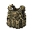
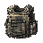
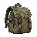
靠近后按 E 搜刮。开箱后，物品仍需逐件搜索：按稀有度耗时 0.45 / 0.85 / 1.4 / 1.8 / 2.1 / 3 秒。
抽取次数是随机抽取的轮数；同一箱内重抽几次仍撞上同一件时才会重复，所以件数稳定落在区间内。每档稀有度概率见各分区标题下那一行，合计 100%。类别偏好只在该档内重新分配类别，不改变稀有度曲线。
箱柜打开、拿空后仍占一个完整格子。尸体与残骸可通行；桌椅、货架、油桶属于场景摆设，不能搜刮。
规格 32×32 透明 PNG，主体位于中央 28×28，四周留 2px。下方按整数倍最近邻放大预览。
视角 75° 倾斜俯视，顶面为主、南侧短立面可见，统一左上光源。与角色和其他场景物件保持一致。
位置 贴图来自 assets/props/。地图位置使用从 0 开始的格坐标 (x, y)，x 向右，y 向下。
白 65% · 绿 25% · 蓝 8% · 紫 1.7% · 金 0.28% · 红 0.02% · 即开即取。九成是白绿，但有 0.3% 的机会翻出金红——真正意义上的垃圾堆里淘黄金。
白 43% · 绿 32% · 蓝 18% · 紫 6% · 金 0.9% · 红 0.1% · 0.6 秒读条，走开就断。白绿占七成半，用来填满背包空位。


白 23% · 绿 29% · 蓝 31% · 紫 14% · 金 2.8% · 红 0.2% · 1.2 秒读条。蓝色达到峰值，白绿仍过半，开始有稳定的中档收益。

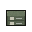
白 10% · 绿 18% · 蓝 32% · 紫 30% · 金 9.5% · 红 0.5% · 1.8 秒读条。蓝紫占六成二、金色接近一成，最适合作为常规高收益目标。


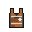
白 4% · 绿 9% · 蓝 22% · 紫 36% · 金 27% · 红 2% · 2.6 秒，必须站定，读条全程发声。紫金占六成三，值得为它改路线。


白 1% · 绿 3% · 蓝 10% · 紫 28% · 金 50% · 红 8% · 3.6 秒，必须站定，读条全程发声。金占一半、红 8%，一局里通常只有两三个。

遗留物不计入上述 48 个固定容器。当前搜刮读条为 0.35 秒；物品仍按逐件搜索规则揭示。